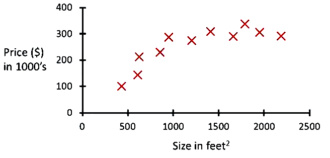

What is Big Data?
Light introduction
Ramon Navarro
Berta Capdevila
Created by Iskra Big Data Solutions / @iskraTIC
LOTS of INFORMATION
NO MAGIC
Data Scientists to rescue!

Data Scientist (n.): Person who is worst at statistics that any statistician and wordst at software engineering than any software engineer

http://drewconway.com/zia/2013/3/26/the-data-science-venn-diagram
Team work
Software
Software Data Scientist Modeler
- R
- SKlearn
- PyBrain
- TextBlob
- Theano
- TensorFlow
Software Data Scientific Computing
- SciPy
- NumPy
- Numba
Software Data Analytics
- Pandas
- Postgresql
- Excel
Software Distributed System
- Spark
- Hadoop
Software Data Web
- Pyramid
- Bokeh
- Plone
Machine Learning
Arthur Samuel (1959)
Tom Mitchell (1997)
- Task T: Predict traffic patterns at a busy intersection
- Experience E: Run past data throught a machine learning algorithm
- If correct:
- Performance measure P: Better predicting future traffic patterns
Predicting house pricing
150.000 $
200.000 $
George E. P. Box
Steps
1. Reading in the data and cleaning it
2. Exploring and understanding the input data
3. Analyzing how best to present the data to the learning algorithm
4. Choosing the right model and learning algorithm
5. Measuring the performance correctly
Application Fields
Data mining
- Web click data
- Medical records
- Informatic Biology
- Engineering
Applications you cannot write by hand
- Handwriting recognition
- Natural Language Processing (NLP) or Computer Vision